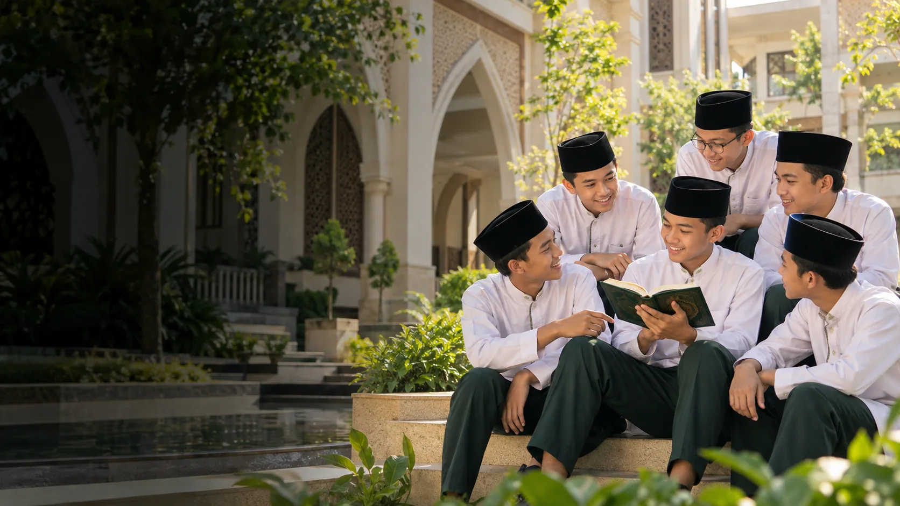
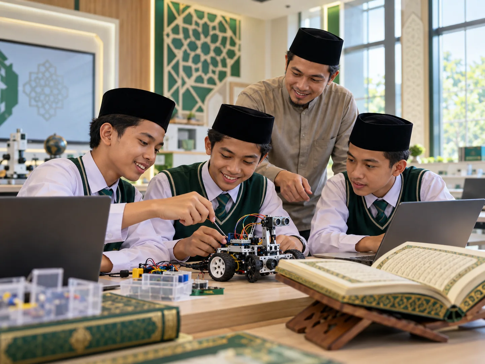
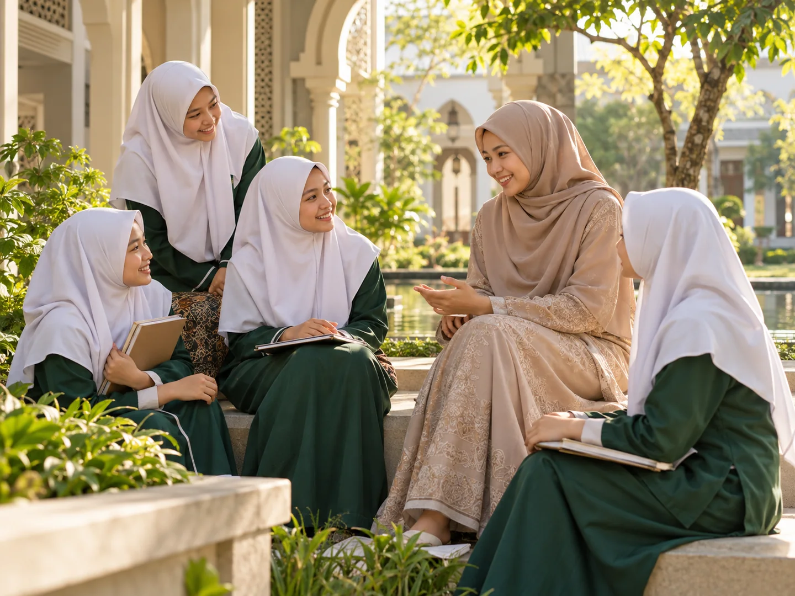

Islamic Scholarship

International Qur’ani Boarding School
Quranic.
Brilliant.
Global.
Menguatkan hafalan Al-Qur’an, mengasah keunggulan akademik, dan menyiapkan generasi yang percaya diri untuk PTN unggulan maupun kampus dunia.
JelajahiDual Pathway
02
TemukanSQILS Learning
03
RasakanAda Cinta di Pesantren
Tumbuh utuh, melangkah jauh
Hafizh yang siap
menjadi world-class
Muslim scholar.
Azharica memadukan dua warisan pendidikan Islam yang terpercaya dalam satu pengalaman belajar yang utuh: otoritas keislaman Al-Azhar Cairo dan tradisi keunggulan akademik Insan Cendekia.
Lihat arsitektur pembelajaran01Qur’anic Foundation
Al-Qur’an menjadi fondasi ilmu, karakter, dan kehidupan.
02Academic Brilliance
Standar belajar tinggi dengan rasa ingin tahu yang hidup.
03Global Readiness
Wawasan, bahasa, dan keberanian untuk hadir di dunia.
Dual Pathway Integrated Curriculum
Dua warisan.
Satu jalan tumbuh.
Kurikulum dirancang agar hafalan Al-Qur’an dan capaian akademik saling menguatkan—bukan saling mengorbankan.
Academic Excellence
Insan Cendekia Pathway
Sains, nalar kritis, dan kesiapan menuju PTN unggulan.Integrated Experience
Azharica Pathway
Integrasi yang menjadikan santri kukuh, cakap, dan global.
SQILSSTEAM Qur’anic Integrated Learning System
Belajar yang menyambung makna
Ngaji bertemu
discovery.
SQILS menghubungkan ayat-ayat kauniyah dengan eksplorasi STEAM. Santri tidak hanya menerima informasi, tetapi bertanya, mencoba, membuat, dan menemukan relevansi ilmu dalam kehidupan.
Ilmu yang terhubung
Konsep Qur’ani hadir sebagai cara pandang ketika santri mempelajari sains, teknologi, rekayasa, seni, dan matematika.
Ada Cinta di Pesantren
Tempat pulang
untuk bertumbuh.
Setiap santri disambut sebagai pribadi yang berharga. Kehidupan pesantren dibangun dengan pendampingan yang hangat, lingkungan yang aman, dan ruang untuk menjadi diri sendiri.
“Welcome home, buddy — di sini, tempatmu tumbuh dan dicintai.”Kenali kehidupan Azharica

Dibangun di atas kepercayaan
Elegan dalam visi.
Hangat dalam hadir.
Warisan terpercaya
Berangkat dari dua ekosistem pendidikan Islam yang telah dikenal luas.
Jalur yang jelas
Menghubungkan cita-cita tahfizh dengan kesiapan akademik tingkat lanjut.
Pendampingan personal
Menyertai tumbuh kembang santri di kelas, asrama, dan keseharian.
Wawasan global
Mempersiapkan santri untuk belajar, berdialog, dan berkarya melampaui batas.
Wawasan Azharica
Belajar lebih dekat.
Pertanyaan yang sering muncul
Sebelum melangkah
lebih dekat.
Pendekatan yang menyatukan fondasi keislaman dan tradisi keilmuan Al-Azhar Cairo dengan keunggulan sains serta akademik Insan Cendekia dalam satu perjalanan belajar.
Ya. Tahfizh menjadi bagian inti dari ekosistem belajar, didampingi metode dan ritme yang dirancang agar sejalan dengan target akademik santri.
Azharica mengusung “Ada Cinta di Pesantren”: lingkungan yang aman, hangat, dan personal agar santri merasa diterima serta berani berkembang.
Jalur belajar disiapkan untuk membuka pilihan menuju PTN unggulan maupun kampus dunia, sesuai minat, kesiapan, dan potensi masing-masing santri.
Mulai perjalanan Azharica
Temukan jalur terbaik
untuk masa depan ananda.
Dapatkan informasi program, tahapan seleksi, dan jadwal kunjungan kampus melalui tim penerimaan santri baru.